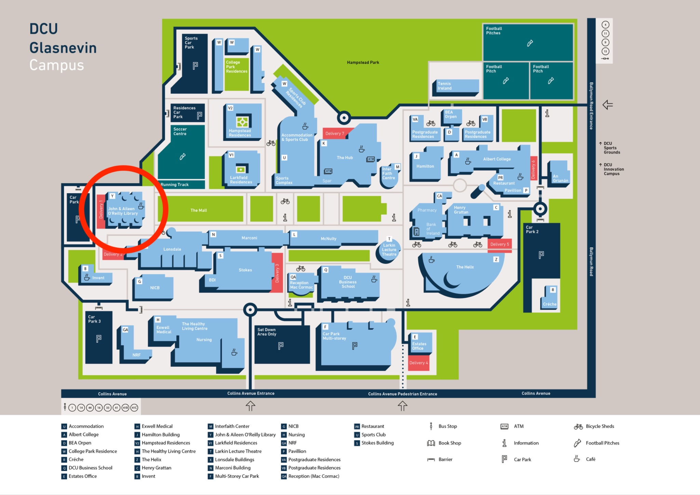
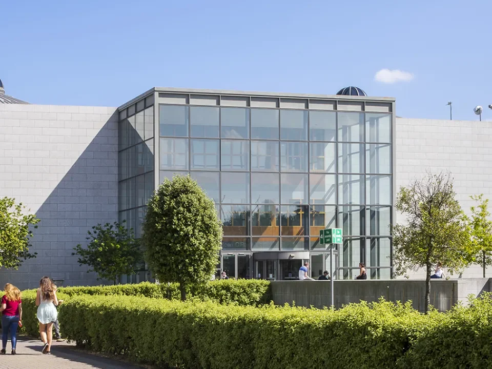
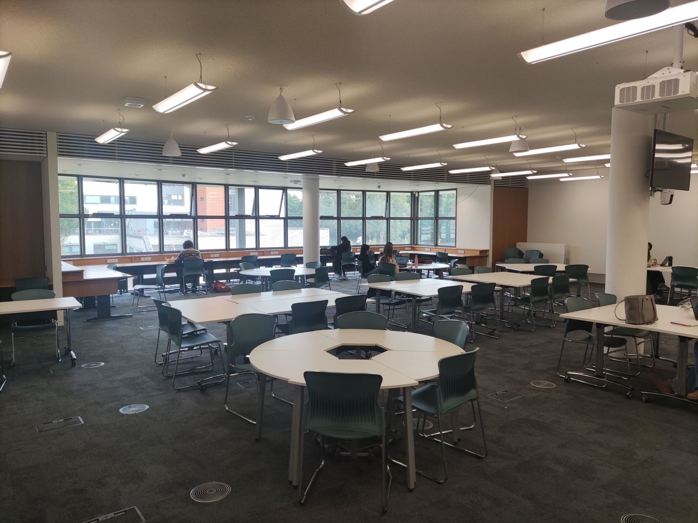
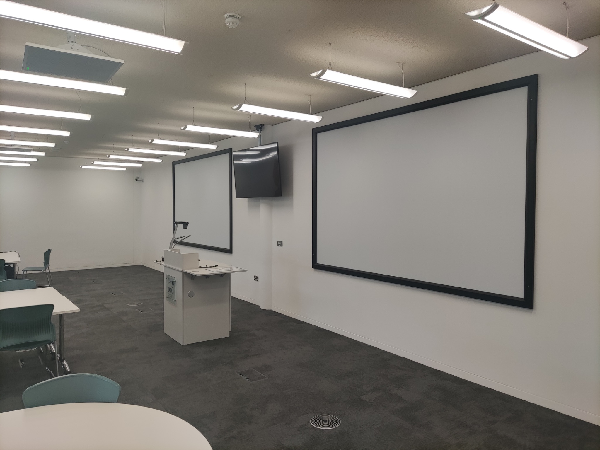

01
Location
The conference will take place in the Information Commons of the John & Aileen O'Reilly Library on DCU's Glasnevin Campus. Signage will direct attendees to the room, and staff will be available at the front desk to guide you as needed.



02
Streaming Equipment
- The room is equipped with a desktop computer, linked to a projector and speakers.
- The room is wired for sound and will pick up speakers and audience questions; no separate microphones are needed.
- We will stream the output of the desktop computer for remote attendees.
- A second computer will stream video-only of the audience so remote speakers can see the room.
- Presentations will be collected and pre-loaded onto the desktop computer in advance.
- A backup laptop, also with presentations pre-loaded, will be available if anything goes wrong with the main machine.

03
Platforms
We will use two platforms to support hybrid participation throughout the event.
Zoom
Used to stream the conference. Use the links below to join on each day.
-
Thursday, May 21:
umich.zoom.us/j/94318890245
Meeting ID: 943 1889 0245 · Passcode: 636505 -
Friday, May 22:
umich.zoom.us/j/96755338274
Meeting ID: 967 5533 8274 · Passcode: 333938
Discord
Text channels for questions and discussion, plus the ‘Tavern’ voice channel for breakout socials. A member of the team will be online throughout the event.
Join: discord.gg/jkYPfj6q6N
04
Speakers
In Person
The Information Commons is set up with a desktop computer, projector, web cam, and microphone. Whilst presenting, you will be streamed to online attendees.
In-person attendees will be in front of you. A monitor at the front of the room will show some of the online attendees.
Presenter notes: the presenter view is shown only on the lectern monitor; the room projector and the stream both display the audience view, so your speaker notes remain private to you. If you'd like to test this in advance, let Andy know.
Online
Online speakers will present directly through Zoom. You will be able to share slides and see both online attendees and the in-person audience in the Information Commons.
Presenter notes: when sharing a single window or slide-show view in Zoom (rather than your whole screen), your speaker notes remain on your own display and are not visible to attendees.
05
Attendees
In Person
The conference takes place in the Information Commons at DCU's John & Aileen O'Reilly Library.
Refreshments (tea, coffee, water) will be available throughout the day. Lunch will be provided on both days in the Information Commons. Please let us know of any dietary requirements if you haven't already.
In-person attendees can see online attendees via a screen in the room and interact via Discord.
Online
We are making an effort to ensure online attendees can take an active part. During presentations you can view the stream on Zoom and participate in discussions on Discord.
You can choose whether or not to activate your webcam. A stream of online attendees will also be shown in the Information Commons.
Discussion rooms will be open throughout and after the conference. OLH staff will monitor the chat during the event.
06
Recording & Photography
Recording: Sessions will be recorded and made available online. Any speakers who do not wish to be recorded should contact Andy Byers or Joan Kwaske.
Photography & Social Media: Lauren Stachew will take photos for OLH's social media accounts during the conference. If you do not consent to photographs being taken and shared, please contact Andy Byers or Joan Kwaske.
07
Questions & Discord
Online and in-person attendees can submit questions via the Q&A channel on Discord. The moderator will read them out to the panel.
We actively encourage all attendees to engage with each other on Discord. Note that you will need to create a free account; we'd love to have you join the OLH/Janeway community we're building there.
08
Support During the Event
- At least one member of OLH technical staff will be in the main room and online throughout the event.
- Technical staff will monitor the stream and discussion channels.
- OLH staff will be identifiable by t-shirts with the Janeway logo.
09
Contact Information
If you have any questions or concerns, please get in touch.